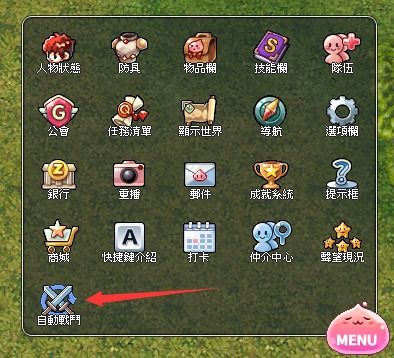
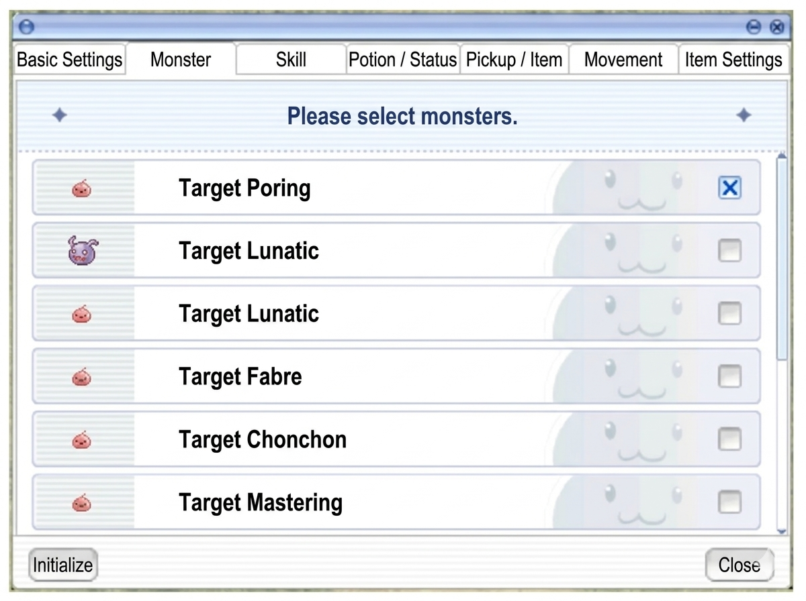
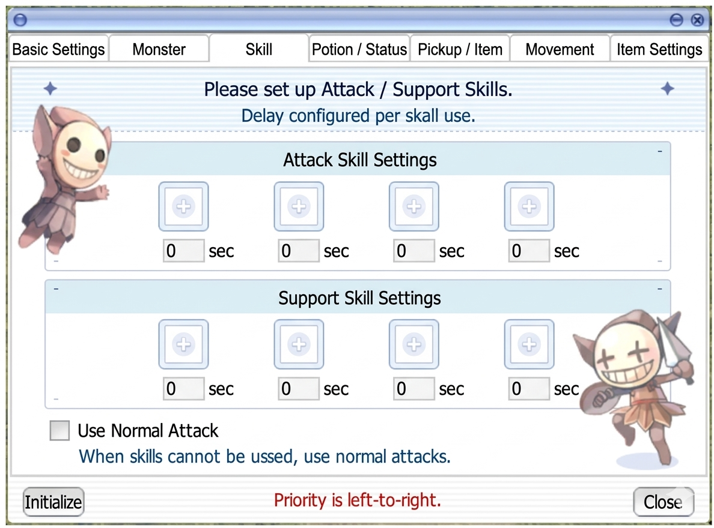
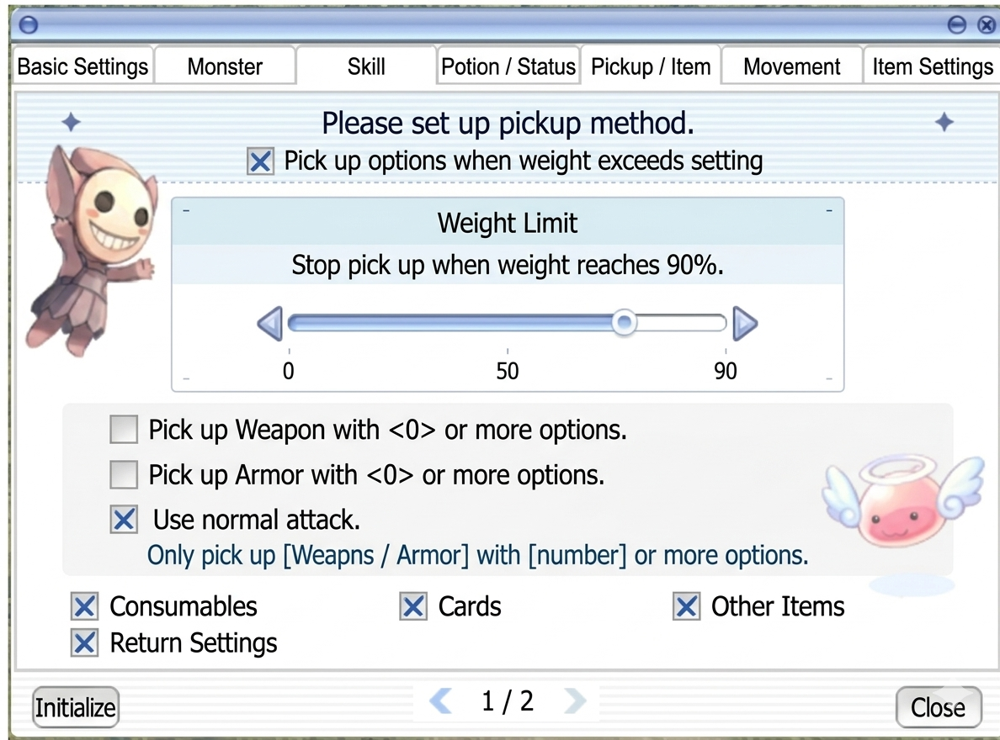
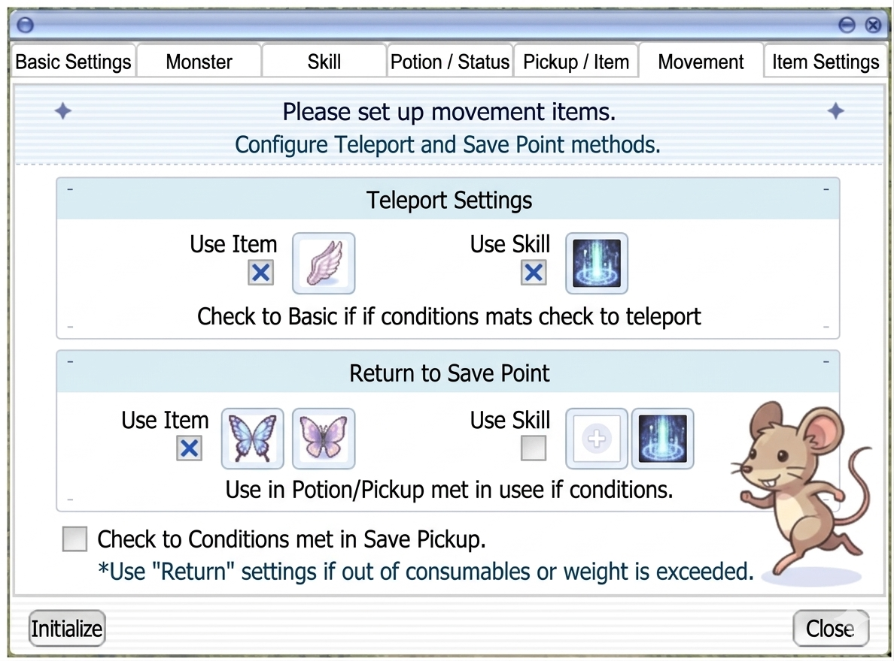

Auto-Hunt & Auto-Pot
Wie das TW-exklusive Auto-Combat-System funktioniert — und warum es einen richtigen Auto-Pot-Threshold (noch) nicht gibt.
🤖 Auto-Hunt & Auto-Pot-Situation
Das Auto-Hunt-System ist das zentrale QoL-Feature der TW-Version und wird aller Voraussicht nach auch auf Global so übernommen. Dieser Abschnitt dokumentiert den aktuellen Stand (Stand: April 2026, nach dem März-24-Patch) und räumt vor allem mit einem Missverständnis auf: einen klassischen „Auto-Pot"-Threshold gibt es (noch) nicht.
📖 Offizielle GNJOY-Dokumentation
Die offizielle Dokumentation von Gravity TW beschreibt das Auto-Battle-System als Komfort-Erweiterung für ein entspannteres Spielerlebnis. Die UI ist in sieben Konfigurations-Tabs unterteilt:
🎯 Schnellzugriff-Button
Der Auto-Battle-Toggle hat ein Kreuz-aus-zwei-Schwertern-Icon und ist standardmäßig neben der Minimap oben rechts platziert. Er lässt sich auf jede Position auf dem Bildschirm ziehen (inkl. neben das MENU-Poring).

⚙️ Konfiguration öffnen
Klick auf das MENU (pinkes Poring) unten rechts → Auto-Battle öffnet das Settings-Fenster mit 7 Tabs. Im MENU-Panel ist Auto-Battle eines von 21 System-Buttons (neben Character, Equipment, Inventory, Skills, Party, Guild, Quest Log, World Map, Navigation, Settings, Bank, Replay, Mail, Achievements, Help, Cash Shop, Hotkey Guide, Attendance, Brokerage, Reputation).

📑 Die 7 Konfigurations-Tabs
1. Basic Settings — Grund-Einstellungen
Grundlogik für Ausdauer während des Auto-Battles. Zentrale Schalter wie Return-to-Town, Death-Recovery.
2. Monster — Monster-Targeting
Auf Maps mit mehreren Mob-Typen kannst du gezielt bestimmte Monster markieren (Hunting-Ziele vs. Ignorieren).
3. Skills — Skill-Slots
4 Angriffs-Slots + 4 Support-Slots mit konfigurierbarer Skill-Verzögerung.
Nach März-2026-Patch: 8+8 Slots
4. Potions — Potion-Slots
Tab 1: 2 HP-Slots + 2 SP-Slots. Tab 2: Grüne Potions, Universal-Medizin.
5. Pickup — Loot-Filter
Tab 1: Gewichts-Limits, Item-Typ-Filter, Min-Anzahl-Zufalls-Optionen für Target-Items.
Tab 2: Gewichts-bezogene Nebenfunktionen.
6. Movement — Bewegungs-Mechanik
Fly-Wing / Teleport-Settings. Bei ausreichend Zeny massiv effizienzsteigernd.
7. Items — Konsumitems
BUFF-Items einrichten mit zeitbasiertem Re-Cast (Blessing, Increase AGI, Food-Buffs, etc.).
🖼️ UI-Referenz-Screenshots

Das Fenster zeigt die grundlegenden Konfigurationseinstellungen für die Auto-Hunt-Funktion im Spiel.
- Character SP below 10%, only use normal attack (High Priority)
- Character SP below 5%, stop attacking and move automatically
- 10 Teleport when not in combat for 10 seconds
- Teleport when >20 monsters are on screen
- Teleport when MVP Boss appears
Die Tabs oben erlauben den Wechsel zwischen verschiedenen Kategorien wie Monster, Skill, Potion/Status, Pickup/Item, Movement und Item Settings.

Ein Konfigurationsfenster für die Monster-Auswahl innerhalb der Spiel-Einstellungen, um Ziele für Aktionen festzulegen.
- Target Poring (ausgewählt)
- Target Lunatic
- Target Lunatic
- Target Fabre
- Target Chonchon
- Target Mastering
Die Registerkarten am oberen Rand erlauben den Wechsel zwischen verschiedenen Spieleinstellungen wie 'Basic Settings', 'Skill', 'Potion / Status', 'Pickup / Item', 'Movement' und 'Item Settings'. Am unteren Rand befinden sich Buttons zum 'Initialisieren' (Zurücksetzen) und 'Schließen' des Fensters.

Das Fenster ermöglicht die Konfiguration von Angriffs- und Unterstützungsfertigkeiten sowie deren Verzögerung für das automatische Kampfsystem.
- Basic Settings
- Monster
- Skill
- Potion / Status
- Pickup / Item
- Movement
- Item Settings
- Please set up Attack / Support Skills.
- Delay configured per skill use.
- Attack Skill Settings
- Support Skill Settings
- Use Normal Attack
- When skills cannot be used, use normal attacks.
- Initialize
- Priority is left-to-right.
- Close
Die Benutzeroberfläche dient zur Priorisierung von Skills, wobei die linke Seite eine höhere Priorität hat. Die Zeitverzögerung kann für jeden Skill einzeln in Sekunden festgelegt werden.

Dies ist das Einstellungsmenü für die automatische Verwendung von Heiltränken basierend auf HP- oder SP-Schwellenwerten.
- Tab: Basic Settings
- Tab: Monster
- Tab: Skill
- Tab: Potion / Status
- Tab: Pickup / Item
- Tab: Movement
- Tab: Item Settings
- Anweisung: Please set up recovery items to use. If ratios are identical, items are used from the left.
- HP-Regenerations-Einstellungen (2 Slots)
- SP-Regenerations-Einstellungen (2 Slots)
- Schwellenwert-Anzeige: HP below 70%
- Schwellenwert-Anzeige: SP below 70%
- Schaltflächen: Initialize, Close
Die Benutzeroberfläche ermöglicht die Konfiguration von zwei HP-Trank-Slots und zwei SP-Trank-Slots mit jeweils prozentualen Schwellenwerten.

Das Menü ermöglicht die Konfiguration von Heiltränken für Statusveränderungen sowie Einstellungen für die automatische Rückkehr in die Stadt.
- Bitte konfigurieren Sie die zu verwendenden Heilmittel für Statusveränderungen.
- Verzögerung pro Tranknutzung konfiguriert.
- Wenn die Dauer des Status kurz ist, werden die Gegenstände schnell aufgebraucht.
- Status-Heiltränke: Verwenden Sie Gegenstände in den Plätzen für Green Potion und Panacea.
- Automatische Heilung bei Treffern durch: Green Potion (Blind, Curse, Silence, Confusion), Panacea (Blind, Curse, Silence, Confusion, Hallucination, Poison)
- Rückkehr in die Stadt, wenn alle Tränke aufgebraucht sind
- Wenn ein Gegenstand fehlt und keine normalen Angriffe genutzt werden können oder das Gewicht das Limit überschreitet, werden die Rückkehr-Einstellungen verwendet.
Dieses Fenster ist Teil der Automatisierungs-Einstellungen im Ragnarok Zero Client.

Dies ist das Interface zur Konfiguration der automatischen Aufsammel-Optionen für den Charakter oder Begleiter, inklusive Gewichtsbeschränkungen und Filter.
- Basic Settings
- Monster
- Skill
- Potion / Status
- Pickup / Item
- Movement
- Item Settings
- Please set up pickup method.
- Pick up options when weight exceeds setting
- Weight Limit: Stop pick up when weight reaches 90%.
- Pick up Weapon with <0> or more options.
- Pick up Armor with <0> or more options.
- Use normal attack.
- Only pick up [Weapns / Armor] with [number] or more options.
- Consumables
- Cards
- Other Items
- Return Settings
Die UI zeigt Einstellungen für das automatische Looten von Gegenständen, wobei die Gewichtsgrenze auf 90% konfiguriert ist.

Das Fenster zeigt die Einstellungen für das automatische Aufsammeln von Gegenständen, inklusive einer Option für die Rückkehr bei Übergewicht.
- Basic Settings
- Monster
- Skill
- Potion / Status
- Pickup / Item
- Movement
- Item Settings
- Please set up pickup method.
- Return Settings
- Return automatically when weight exceeds setting.
- Initialize
- 2 / 2
- Close
Dies ist die zweite Seite des 'Pickup / Item'-Reiters im Spiel-Interface.

Das Menü ermöglicht die Konfiguration von Teleportations-Optionen und die automatische Rückkehr zum Speicherpunkt.
- Teleport Settings: Use Item (Fly Wing), Use Skill (Teleport)
- Return to Save Point: Use Item (Butterfly Wing), Use Skill (Warp Portal)
- Check to Conditions met in Save Pickup.
- Use 'Return' settings if out of consumables or weight is exceeded.
Dies ist ein Konfigurationsfenster für einen Bot oder ein Makro-Tool in Ragnarok Online.
Das Fenster ermöglicht die Konfiguration von Buff-Items, die nach einer bestimmten Zeit automatisch verwendet werden sollen, sowie eine Option zur Rückkehr in die Stadt, wenn die Items aufgebraucht sind.
- Grundlegende Einstellungen
- Monster-Einstellungen
- Fähigkeiten-Einstellungen
- Trank-Einstellungen
- Aufhebe-Einstellungen
- Bewegungs-Einstellungen
- Item-Einstellungen
Benutzeroberfläche des automatischen Buff-Systems. Der Benutzer kann bis zu 8 verschiedene Items und deren jeweilige Verzögerungszeit in Millisekunden konfigurieren. Die Option 'Rückkehr in die Stadt' sorgt dafür, dass der Charakter zum Speicherpunkt zurückkehrt, sobald die Buff-Items leer sind.
- Das Auto-Battle-System wird kontinuierlich weiterentwickelt — Screenshots zeigen einen Moment-Zustand, echte Features ändern sich mit Patches.
- Nicht alle Items / Skills können in das Auto-Battle-System eingebunden werden. Was erlaubt ist, entscheidet das Spiel.
- Zur Balance-Wahrung kann die Liste erlaubter Items/Skills ausgeweitet oder eingeschränkt werden. Patch-Notes im Auge behalten.
⚙️ Auto-Hunt Grundmechanik
Kapazität (nach März-2026-Patch)
- 8 Angriffs-Skill-Slots (vorher 4) — hier trägst du deine Damage-Skills ein
- 8 Support-Skill-Slots (vorher 4) — Buffs, Heals, Pot-Timings
- Auto-Cast + Auto-Shadow-Cast — werden unterstützt für Support-Skills
- Combo/Chain-Settings — eigene Skill-Reihenfolgen
- Normal-Attack-Toggle — kann an- oder abgeschaltet werden (wichtig z.B. für Alchemisten mit Homunculus)
Was du konfigurieren kannst
- Skill-Delay zwischen Aktionen
- Pickup-Delay
- Drink-Delay (Wasserkonsum-Pause, nicht HP/SP-Threshold!)
- Auto-Hunt-Flow (Ablauf-Reihenfolge)
- Map-Freischaltung (manche Maps sind standardmäßig für Auto-Hunt gesperrt)
Was du NICHT konfigurieren kannst (C++-hardcoded)
- Erkennungs-Reichweite: nur ca. 7–8 Zellen um den Charakter. Monster weiter weg werden komplett ignoriert
- Erkennungs-Frequenz: fest limitiert
- Target-Priorität: greift immer das nächste Ziel an — keine Prioritätsliste, keine Ignore-Liste, keine Elemental-Priorisierung
💊 Auto-Pot-System
Konfiguration
- Eigene Slots für HP-Potions und SP-Potions
- UI zeigt die aktuellen Potion-Icons mit Restmenge im Inventar
- Threshold-basiert: Vermutlich %HP- und %SP-Slider (exakte UI-Elemente aus öffentlichen Quellen nicht 1:1 dokumentiert)
- Pot-Trigger läuft parallel zum Support-Skill-Engine (Buff-Refresh + Heal-on-Party-Member)
Unterstützte Items
- HP: Red / Orange / Yellow / White Potions, Condensed White, Royal Jelly
- SP: Blue Potion, Grape Juice, Mastela Fruit
- Yggdrasil Berry / Leaf als Emergency-Items → aus öffentlichen Quellen nicht bestätigt
🐛 Kritischer Bug — Return-to-Town
Bekannte Einschränkungen
- Config-Reset-Bug: Änderungen während einer Session können bei Disconnect verloren gehen. Erst nach Rückkehr zum Char-Select sind sie persistent.
- Pot-Count-UI-Bug: Anzahl-Anzeige kann leer wirken, obwohl Items noch im Inventar sind.
- Kein automatisches Restock: Pot-Verbrauch auffüllen = manuelles Town-Runnen und NPC-Kauf.
- Standard-Potion-Global-Cooldown (~1s) gilt — kein Umgehen.
- Multi-Threshold-Stacking (z.B. White Pot @ 50% + Royal Jelly @ 20%) aus Quellen nicht bestätigt — wahrscheinlich möglich, aber nicht verifiziert.
Weitere Sustain-Optionen parallel zum Auto-Pot
- Pots als Support-Skills timen — Du kannst Potions zusätzlich in die 8 Support-Skill-Slots mit festem Intervall legen (z.B. "Condensed White alle 5 Sek"). Zeit-basiert, nicht HP-basiert.
- Passive Regen-Gear: Eden Group Boots (+10–14% HP-Regen), Zero Beetle Card (SP-Regen-on-Kill), Spiritual Ring, Shadow-Priest-Shoes
- Klassen-spezifische SP-Sustain-Builds: Knight "Pierce Machine" (INT 40-60), Priest mit Magnificat Lv 5 (Party-SP-Regen x2)
🖼️ UI-Struktur (rekonstruiert aus Forum-Beschreibungen)
- Multi-Tab-Fenster mit mehreren Seiten
- Seite 1: Resurrection-Count-Checkbox, Death-Return-Toggle, Weight-/Supply-Cutoffs, Pot-Slots
- Attack-Skills-Tab: 8 Slots, pro Skill konfigurierbar: Skill-Level, Delay zwischen Casts, Max-Casts pro Target, per-Mob-Binding
- Support-Skills-Tab: 8 Slots, Auto-Cast + Auto-Shadow-Cast Toggles
- Per-Monster-Targeting-Tab: Skill → Mob-Name-Bindings
- Import/Export: Config als Datei teilbar mit anderen Spielern
Class-spezifische Tricks für HP/SP-Sustain
- Knight: „Pierce Machine"-Build mit INT 40–60 → regeneriert SP schnell genug um Pierce dauerhaft zu spammen. Zero Beetle Card (SP-Regen-on-Kill) ist der Gamechanger
- Priest: Magnificat Lv 5 als eigenen Support-Buff → verdoppelt SP-Regen, Heal als Auto-Cast
- Monk: Asura nicht auto-hunt-tauglich (manuelles Timing nötig); Combo-Logik ist fehlerhaft und ignoriert Spirit-Sphere-Count
- Alchemist: Cart-Attack-Skill-Slot auf 999 Sek setzen = effektiv deaktiviert, sodass nur Homunculus farmt
- Wizard: Bekannter Bug — nach Single-Skill-Trigger (z.B. Ganbantein) werden Items manchmal nicht aufgehoben
🎯 Target-Handling Detail
- Nearest-Target-Only: Bei mehreren Mobs in Reichweite wird immer der nächstgelegene angegriffen. Kein User-Override
- Off-Screen-Ignoranz: Homunculus erkennt Mobs außerhalb der Player-Reichweite (teilweise auch off-screen), Auto-Hunt aber nur 7–8 Zellen. Das führt dazu, dass Homunculus „Gassi geführt" wird — der Player läuft in Homunculus-Richtung, sieht aber selbst die Mobs nicht
- Nach-Kill-Pause: Häufige Player-Complaint — nach Kill steht der Char oft 1–2 Sekunden bevor nächstes Target aufgenommen wird. Wird als „inaktiv-wirkend" wahrgenommen
- Search-Walk: Wenn kein Target in Reichweite, bewegt sich der Char in Zufalls-Richtung (wie ein Gassi-Hund) — kein Pfad-Algorithmus
🛡️ PvP & Map-Restriktionen
- PvP-Maps: Auto-Hunt ist dort deaktiviert (April-2026-Patch) — zusätzlich wurden Fly Wing + Teleport in PvP-Maps geblockt
- Bestimmte Endgame-Maps: Standard für Auto-Hunt gesperrt (Unlock via NPC-Items möglich)
- Instanzen: Auto-Hunt funktioniert innerhalb von Memorial-Dungeons, aber Boss-Mechaniken (Reflect Shield, Shaman's Flowers etc.) werden ignoriert — oft resultiert in Wipes
💀 Death-Handling
- Bei Tod: Keine automatische Respawn-Aktion — der Char bleibt am Death-Screen bis Player manuell eingreift
- Kein automatisches Gear-Repair / Potion-Restock in Town
- Keine automatische EXP-Penalty-Recovery
🔄 Wie du trotzdem länger AFK-farmst
- Multi-Char-Setup: TW erlaubt 5 Accounts/ID. Einen Support-Priester im Party-Slot mit Magnificat und Blessing auf Timer → dein Farm-Char bleibt oben
- Pot-Preloading: Inventar voller Red Potions + Blue Potions + Orange Potions. Support-Slots mit Staffel-Timern (z.B. Red 3s, Orange 7s, Blue 5s). Bei rotierendem Trinken reicht oft 2–4 Stunden
- Gear-Priorität: HP-Regen-Items (Eden Group Boots: +10–14% HP-Regen, Shadow Merchant Armor-Varianten) sind entscheidend
- Farming-Spot-Auswahl: Maps wählen, wo Mobs nicht schneller Damage machen als dein Regen. Siehe Level-Routen und Fever Maps
📊 March-2026-Patch — Was sich geändert hat
- Attack-Skill-Slot-Limit auf 8 erhöht (vorher 4)
- Support-Skill-Slot-Limit auf 8 erhöht (vorher 4)
- Support-Skill-Toggle-Logik optimiert
- Auto-Cast + Auto-Shadow-Cast im Support-Slot hinzugefügt
🏆 Tier-List: Welche Klassen sind am besten zum Auto-Hunt?
Ranking basiert auf: 1) Skill-/SP-Sustain ohne manuellen Eingriff, 2) Target-Acquisition im 7–8-Zellen-Radius, 3) Robustheit gegen die Auto-Hunt-Eigenheiten (Nach-Kill-Pause, Nearest-Only, fehlender Auto-Pot).
| Tier | Klasse | Beschreibung | Setup |
|---|---|---|---|
| 🥇 S | Archer | Double Strafe = ein Skill, ein Ziel, kein Combo. Ranged-Range bricht aus dem Nahkampf-Radius aus, bevor Schaden reinkommt. SP-Kosten niedrig genug, dass ein Blue Potion alle 5s reicht. Einzige Ausgabe: Arrows. | DS Lv 10 in Slot 1, Owl's Eye passiv, Fire/Silver Arrows für Element-Coverage. |
| 🥇 S | Mage | Cold/Fire/Lightning Bolt als Single-Target-Skill ist stabil auto-hunt-tauglich. Wichtig: nur EIN Bolt-Typ im Attack-Slot — sonst macht Auto-Hunt Element-Chaos. | Ein Bolt-Typ max, Fire Wall bei Bedarf im Support-Slot. INT-Gear für SP-Pool. |
| 🥈 A | Swordsman | Bash Lv 10 + Magnum Break als Clear-Support funktioniert. HP-Regen reicht für moderate Mobs. Problem: Nearest-Only ignoriert Aggro-Mechaniken — Crowd-Situationen führen zu Deaths. | Bash als Attack-Slot 1, Endure + Provoke als Support-Slots. |
| 🥈 A | Acolyte | Heal auf Undead-Gear-Mobs ist starker Auto-Hunt-Trick. Aber: nur in Undead-Maps effektiv (GH Culvert, Payon Cave). Nicht universell. | Heal Lv 10 im Attack-Slot, Blessing + Inc Agi auf Timer im Support-Slot. |
| 🥉 B | Merchant | Funktioniert, kostet aber kontinuierlich Zeny (900z/Cast bei Mammonite Lv 10). Cart Revolution als AoE-Clear-Backup. | Mammonite + Greed-Macro + Cart Attack auf 999s deaktivieren (sonst chargt Auto-Hunt damit unerwünscht). |
| 🥉 B | Thief | Double Attack Passive + Normal-Attack-Toggle an. Einfach, aber melee-fragil. | Normal Attack ON, Double Attack passiv, Detoxify + Envenom als Support. |
🏆 Tier-List: 2. Job
| Tier | Klasse | Beschreibung | Setup |
|---|---|---|---|
| 🥇 S+ | Knight (Pierce Machine) | Der Midgard-Academy-Build explizit für Auto-Hunt designed. STR 80–90 + INT 40–60 für SP-Sustain → Pierce spammt sich dauerhaft ohne SP-Pots. Mit Zero Beetle Card (SP-Recovery-on-Kill) läuft der Char stundenlang. | Pierce Lv 10 in Attack-Slot 1 (0,3–0,5s Skill-Delay), Two-Hand Quicken auf Timer (Support). Eden Spear III + Zero Beetle Card Pflicht. |
| 🥇 S | Hunter (Double Strafe Sniper) | Fortsetzung des Archer-Spiels. DEX 99 + AGI 90 → Double Strafe spammt mit hohem ASPD. Falcon-Trigger als AoE-Bonus. | DS Lv 10, Owl's Eye passiv, Ankle Snare im Support-Slot. BiS: Apple o' Archer + Zerom-Card-Gloves (+3 DEX/Slot). |
| 🥇 S | Sage (Auto-Spell Battle Tome) | Die wortwörtlich perfekte Auto-Hunt-Klasse. Auto-Spell triggert Bolts bei Normal-Attack — kein manuelles Skill-Timing nötig. Free Cast erlaubt Move während Cast. | Normal Attack ON + Auto-Spell im Support-Slot. Siroma (Water) oder Imp (Fire) Cards. Dazu matching Endow-Skill. |
| 🥇 S | Wizard (AoE Destruction) | Storm Gust / Meteor Storm / LoV clearen ganze Mobs auf einmal. Best für Maps mit dichten Spawns. Bekannter Bug: nach Single-Skill-Trigger picked Wizard gelegentlich keine Items auf. | Storm Gust als Main-Skill (Attack-Slot 1), Fire Wall bei Bedarf. |
| 🥇 S (Undead/Demon) | Priest (Full-Support Solo) | Magnificat verdoppelt SP-Regen → Sanctuary dauerhaft spammbar. In Undead/Demon-Maps (GH Churchyard, Payon Cave) praktisch unverwundbar. Außerhalb: nur mittelmäßig. | Magnificat dauerhaft Support-Slot, Heal auf Self, Holy Light Attack-Slot 1, Aspersio auf Weapon. |
| 🥈 A | Blacksmith (Battle-Greed) | Mammonite + Cart Revolution + Adrenaline Rush. Greed Lv 1 = Loot-Vakuum (massive QoL). Mammonite-Zeny-Kosten sind substantiell — nur rentabel auf Zeny-positive Maps. | Mammonite in Attack-Slot 1, Greed-Macro auf Timer, Adrenaline Rush im Support-Slot. |
| 🥈 A | Assassin (Double Dagger) | Dual-Dagger + Double Attack passive + Normal-Attack ON = effizientes AFK-Farming. Sonic Blow auf Auto-Hunt weniger effektiv (SP-Drain). | Normal Attack ON, Double Attack passiv, Cloaking Lv 3 als Emergency-Support. |
| 🥈 A | Rogue (Gank Evasion) | High-AGI + Gank (passive Steal) + Whisper-Card-Cloak = sehr hohe Flee. Viele Mobs verfehlen einfach. Lange Sessions bei niedriger Death-Rate möglich. | Normal Attack ON, Gank passiv, Tunnel Drive für Speed. |
| 🥉 B | Crusader | Grand Cross hat Self-Damage-Risiko — ohne Pupa/Angeling Card und mit Auto-Hunts „warte nicht auf Heal"-Logik oft Deaths. | Heal Lv 5 + Faith Lv 10 als Sustain. Alternative: Holy Cross + Shield als Spear-Combo für sichereres Farming. |
| 🥉 B | Alchemist (Homunculus Tank) | Homunculus (Vanilmirth) tankt, Player stands back. Homunculus-AI besser als Auto-Hunt-AI (sieht Mobs weiter). | Call Homunculus aktiv, Normal Attack AUS, Learning Potion passiv. Cart Attack auf 999s setzen, damit der Alche nicht selbst chargt. |
| ❌ D | Monk | Defekte Combo-Logik: Bahamut-Thread #3035 dokumentiert, dass Monk-Combos von Auto-Hunt falsch gehandhabt werden. Triple Attack verbraucht Spirit Spheres unvorhersagbar — Finger Offensive / Chain Combo laufen oft ohne Bubbles. GRAVITY hat das als „kein Bug, sondern normales Verhalten" bestätigt. | Workaround: Nur Triple Attack + Iron Fists Combo-frei spielen. Combo-Skills manuell. |
| ❌ D | Bard / Dancer | Support-Klassen — Bragi/Service sind Gruppen-Skills, kein Solo-Farming-Profil. Battle-Build (Arrow Vulcan) möglich, aber Hunter macht das besser. | — |
💡 Empfehlung für Auto-Hunt-Hauptchars
- Erster Char / Zeny-Farmer: Hunter — simpler Auto-Hunt, niedrige Death-Rate, sammelt Zeny + XP
- Long-Session-AFK: Knight Pierce Machine — das beste Sustain-Profil (INT+Beetle Card), Stunden-lange Sessions realistisch
- "Ich will gar nichts tun"-Spieler: Sage Auto-Spell — Auto-Attack → Spells triggern sich selbst
- Zeny-Farm mit Loot: Blacksmith — Greed sammelt, Mammonite killt
- Undead/Demon-Maps (GH): Priest Heal-Bomb — fast unverwundbar
🔮 Was die Community fordert (Potenzial für Global)
Mehrere Bahamut-Threads listen die häufigsten Auto-Hunt-Wünsche auf. Falls Global diese umsetzt, wird das System deutlich mächtiger:
- Threshold-basierter Auto-Pot (HP/SP % → automatisch trinken) — die Top-Forderung
- Erhöhung Support-Skill-Slots auf 10+ (aktuelle 8 reichen bei vielen Buff-stackenden Klassen nicht)
- „Buff ausgelaufen → sofort neu" statt „Timer abgelaufen → bei nächstem Mob"
- Target-Prioritäts-Liste (Elemental-Match statt Nearest-Only)
- Erhöhung Search-Range über 7–8 Zellen hinaus
- Automatisches Town-Portal/Fly-Wing bei niedrigem HP (aktuell erst wenn Pots aus)
- Auto-Storage / Auto-Sell bei vollem Inventar
✅ TL;DR — was du jetzt weißt
- Auto-Hunt: Ja, robust, 8+8 Slots seit März 2026
- Auto-Pot-by-Threshold: Nein, gibt es nicht. Community fordert es aktiv
- Workaround: Potions in Support-Slots mit Timer, Class-Sustain-Gear, Pot-Rotations-Staffel
- Target: Nearest-Only, Range 7–8 Zellen, kein Override
- Death: Keine Auto-Recovery, Char bleibt am Death-Screen
- PvP: Auto-Hunt deaktiviert